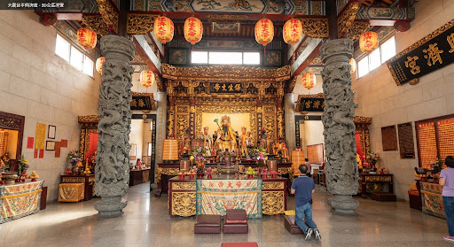
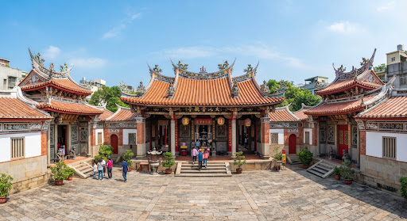
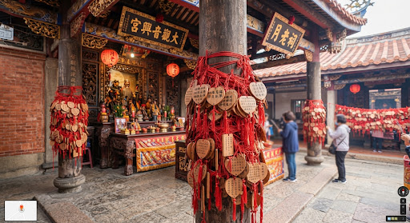

language
explore
全境探索熱點
共構建築三進格局・佛道共融地標
神明手冊
大觀音亭・GY-03
正殿觀音閣
明鄭永曆年間奠基，府城四大佛寺首席
金面觀音佛像
•
清代御匾
chevron_right

神明手冊
興濟宮・XJ-01
醫神保生大帝
道教名剎，藥籤靈驗、虎爺威嚴護佑
保生大帝吳真人
•
藥籤木櫃
chevron_right

國定古蹟
特殊建築
官廳共構中軸服務台
清代官員致祭前整肅衣冠候旨之所，全台唯一
三川門過水廊
•
佛道連通橋樑
chevron_right

神明手冊
後殿信眾聚集
闊嘴月老與後拜亭
府城四大月老之一，善說好話牽良緣，信眾絡繹不絕
紅線良緣
•
喜餅還願專區
chevron_right
alt_route
參拜動線建議
參拜順序一起拜分開拜都可以~但建議依傳統順序進行。
點擊地圖編號 1–7 查看各站參拜說明

1
步驟 1：外面天公爐（朝外參拜）
先向興濟宮外朝天公爐敬拜玉皇上帝，稟報善信姓名、生辰、居住地址及今日祈願所求。
點擊地圖編號 1–7 查看各站參拜說明
1
步驟 1：外面天公爐（朝外參拜）
先向大觀音亭外朝天公爐敬拜玉皇上帝，稟報今日前來禮佛善信姓名、地址與心中祈願。